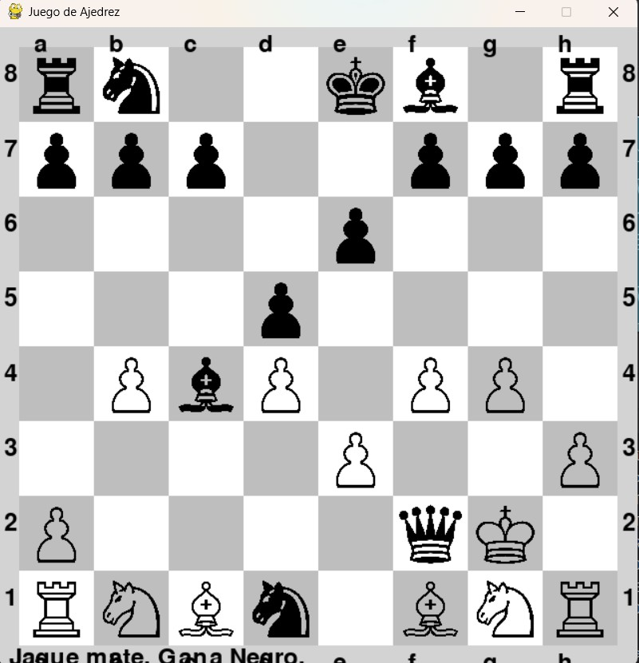

Proyecto 1: Juego de Ajedrez con IA utilizando Stockfish
Este proyecto consiste en el desarrollo de un juego de ajedrez en el que un jugador humano se enfrenta a una inteligencia artificial de alto nivel. Fue desarrollado en Python dentro del entorno de desarrollo Visual Studio, integrando el motor de ajedrez Stockfish, uno de los más potentes del mundo.
El objetivo principal del proyecto fue explorar el uso de motores de juego avanzados dentro de entornos controlados, y permitir al usuario experimentar una partida desafiante contra un adversario computacional de nivel maestro. La dificultad utilizada es la más alta posible, ofreciendo una experiencia muy cercana a enfrentarse con un jugador profesional.
Características del sistema:
- Elección de color y turno: el jugador puede seleccionar si desea jugar con las piezas blancas o negras, y si quiere iniciar primero o dejar que comience la IA.
- Interfaz de usuario: el tablero se visualiza en consola o (según versión) en una interfaz gráfica básica, mostrando el estado actual de la partida en todo momento.
- Integración con Stockfish: se utiliza el motor Stockfish para calcular las jugadas de la IA, evaluando posiciones y respondiendo con el mejor movimiento posible en cada turno.
- Sistema de validación de movimientos: el juego valida cada movimiento ingresado por el jugador, y no permite jugadas ilegales, asegurando la integridad de la partida.
- Conexión con bases de datos: se registra el historial de partidas y movimientos para análisis posterior, utilizando una base de datos local o en archivo, dependiendo de la configuración.
El motor Stockfish fue configurado con parámetros de análisis profundo, lo que permite a la IA responder con un alto nivel de precisión estratégica, ofreciendo una experiencia enriquecedora tanto para jugadores principiantes como avanzados.
Tecnologías utilizadas:
- Lenguaje: Python
- Entorno de desarrollo: Visual Studio
- Motor de ajedrez: Stockfish
- Base de datos: almacenamiento de partidas y movimientos
- IA: cálculo de movimientos con dificultad máxima
Proyecto 2: Aplicación Móvil "Katering"
Katering es una aplicación móvil desarrollada con Android Studio y Kotlin, orientada a facilitar la generación de documentos personalizados en formato PDF. Su objetivo principal es permitir a los usuarios ingresar información específica en formularios estructurados y, a partir de estos datos, producir un documento profesional con formato definido, listo para compartir o imprimir.
Esta aplicación fue diseñada pensando en pequeños negocios de servicios como catering, organización de eventos o asesorías técnicas, donde se requiere generar presupuestos, informes o contratos con rapidez y precisión.
Características destacadas:
- Lectura de plantillas: la aplicación trabaja con plantillas predefinidas de documentos que contienen formato, estilo y campos editables.
- Relleno automático de documentos: al ingresar los datos solicitados (cliente, servicio, precios, fechas, etc.), la app los inserta automáticamente en los campos correspondientes de la plantilla.
- Conversión a PDF: una vez completado el formulario, el documento final es generado en formato PDF, listo para ser almacenado o compartido.
- Cálculos automáticos: dentro del formulario se incluyen secciones para cálculos automáticos, como totales, subtotales y porcentajes, los cuales se generan en tiempo real en una tabla visual dentro de la app.
Integración con Google Drive:
Uno de los aspectos más potentes de la aplicación es su integración con la API de Google Drive. Esto permite a los usuarios importar sus propias plantillas desde la nube, guardar automáticamente los documentos generados y mantener una copia de respaldo accesible desde cualquier dispositivo.
La integración también garantiza que la generación de PDFs se haga sobre documentos con formato profesional, manteniendo estilos como tablas, negritas, alineación, logotipos y estructuras personalizadas.
Tecnologías utilizadas:
- Lenguaje: Kotlin
- Entorno de desarrollo: Android Studio
- Generación de PDFs: Lectura y edición de plantillas
- API externa: Google Drive API para carga/lectura de documentos
- Interfaz: Formularios interactivos con cálculos dinámicos
Proyecto 3: Aplicación Móvil "Lista de Tareas"
Lista de Tareas es una aplicación móvil desarrollada en Android Studio utilizando Kotlin, cuyo propósito es ofrecer una herramienta simple pero funcional para la gestión personal de tareas diarias. Esta app está diseñada para usuarios que buscan una solución práctica para organizar su tiempo y actividades cotidianas desde su dispositivo móvil.
Con una interfaz clara e intuitiva, permite crear, editar y marcar tareas como completadas, permitiendo al usuario tener control total sobre su lista de pendientes. Aunque es una aplicación ligera, cuenta con detalles visuales que mejoran la experiencia del usuario.
Características principales:
- Creación de tareas: el usuario puede añadir nuevas tareas especificando un título y una descripción personalizada.
- Edición de tareas existentes: permite modificar cualquier campo de una tarea creada previamente.
- Marcar tareas como completadas: cada tarea tiene un checkbox que, al ser marcado, indica que ha sido realizada. Las tareas completadas se subrayan para diferenciarlas visualmente.
- Asignación de colores: el usuario puede seleccionar entre varios colores para personalizar el fondo de cada tarea, facilitando la organización visual según prioridades o categorías.
La aplicación fue desarrollada aplicando buenas prácticas en arquitectura de software móvil, utilizando componentes como RecyclerView para mostrar las listas dinámicas y ViewBinding para una gestión más segura y clara de la interfaz.
Tecnologías utilizadas:
- Lenguaje: Kotlin
- Entorno de desarrollo: Android Studio
- Interfaz: RecyclerView, ViewBinding
- Funcionalidades: Check de tareas, edición, selección de color